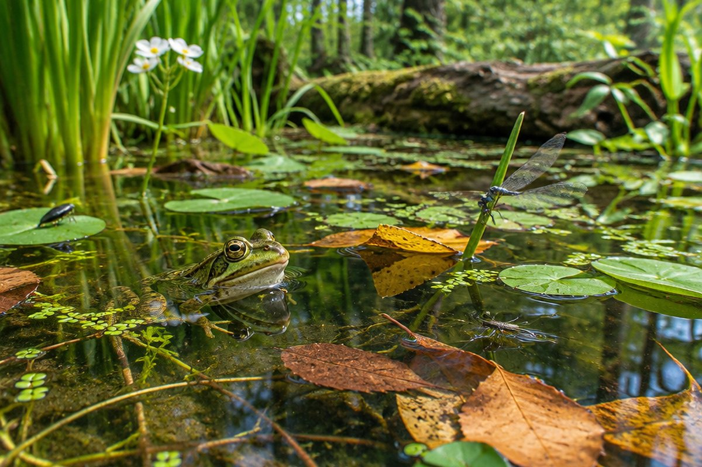

생물은 주변 환경과 어떻게 어울려 살까?

숲에는 나무와 풀, 벌레, 새, 그리고 눈에 보이지 않는 곰팡이와 세균까지 살아요. 이 생물들은 서로, 그리고 햇빛·물·흙과 어떻게 연결되어 있을까요?
생태계란?
어떤 장소에서 생물이 주변 환경과 서로 영향을 주고받는 것을 '생태계'라고 해요. 숲, 연못, 바다, 화단도 모두 생태계예요.
생태계는 동물, 식물, 곰팡이, 세균 같은 '생물 요소'와 햇빛, 물, 온도, 흙, 공기 같은 '비생물 요소'로 이루어져 있어요.
학교 화단의 꽃(생물 요소)은 햇빛과 물(비생물 요소)이 있어야 잘 자라요.
생산자, 소비자, 분해자
생물은 양분을 얻는 방법에 따라 나눌 수 있어요. 식물처럼 햇빛을 이용해 스스로 양분을 만드는 생물을 '생산자'라고 해요.
다른 생물을 먹어 양분을 얻는 동물은 '소비자', 죽은 생물이나 배출물을 분해해 양분을 얻는 곰팡이와 세균은 '분해자'예요. 분해자가 없다면 죽은 생물과 배출물이 쌓여 지구가 지저분해질 거예요.
벼(생산자), 메뚜기(소비자), 버섯(분해자)
먹이 사슬과 먹이 그물
생물들 사이의 먹고 먹히는 관계가 사슬처럼 한 줄로 이어진 것을 '먹이 사슬'이라고 해요. 여러 먹이 사슬이 그물처럼 얽힌 것은 '먹이 그물'이에요.
먹이 그물에서는 한 종류의 먹이가 사라져도 다른 먹이를 먹고 살 수 있어서, 생물이 살아가기에 더 유리해요.
벼 → 메뚜기 → 개구리 → 뱀 → 매
생태계 평형
생태계에서 생물의 종류와 수가 균형을 이루며 안정된 상태를 유지하는 것을 '생태계 평형'이라고 해요.
어떤 생물이 갑자기 사라지거나 늘어나면 평형이 깨질 수 있어요. 미국 국립 공원에서 늑대가 사라지자 사슴이 크게 늘어 풀과 나무가 줄었고, 다시 늑대를 데려오자 생태계가 차츰 회복되었어요.
환경에 적응한 생물과 환경 보전
생물이 사는 곳의 환경에 알맞게 생김새나 생활 방식을 갖게 되는 것을 '적응'이라고 해요. 선인장은 잎이 가시로 되어 있어 사막에서 물이 덜 빠져나가고, 북극여우는 귀가 작고 털이 두꺼워 추위를 잘 견뎌요.
쓰레기, 매연, 폐수 같은 환경 오염은 생물이 살아가기 어렵게 만들어요. 일회용품을 줄이고, 분리배출을 잘하고, 대중교통을 이용하는 것이 생태계를 지키는 방법이에요.
대벌레는 나뭇가지와 비슷한 생김새여서 적의 눈에 잘 띄지 않아요.
핵심 낱말
- 생태계
- 생물이 주변 환경과 서로 영향을 주고받는 것
- 비생물 요소
- 햇빛, 물, 온도, 흙, 공기처럼 살아 있지 않은 요소
- 생산자
- 햇빛을 이용해 스스로 양분을 만드는 생물
- 분해자
- 죽은 생물이나 배출물을 분해해 양분을 얻는 생물
- 먹이 그물
- 여러 먹이 사슬이 그물처럼 얽혀 있는 것
- 적응
- 생물이 환경에 알맞게 생김새나 생활 방식을 갖게 되는 것
한 줄 정리
- 생태계는 생물 요소와 비생물 요소가 서로 영향을 주고받는 것이에요.
- 생물은 생산자·소비자·분해자로 나뉘고, 먹이 사슬이 얽혀 먹이 그물을 이뤄요.
- 생태계 평형은 쉽게 깨질 수 있으므로 환경을 보전해야 해요.